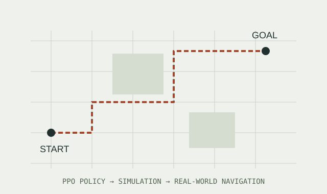

PPO policies for obstacle avoidance and path planning on varied terrain, from simulation to deployment on real robots.
What I worked on
- Developed navigation and obstacle-avoidance policies, including reward design and PPO network tuning.
- Iterated through policy training in simulation and adapted the system for deployment on a quadruped robot.
- Worked on terrain variation, local optima, and hardware integration during the competition.
COMPETITION RESULT
13th in semifinals · 25th in finals